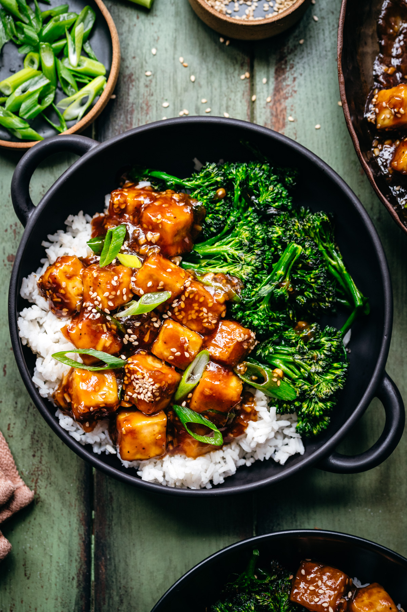

Tofu Teriyaki

- 400 g extra firm tofu
- 1 tbsp vegetable oil
- 1 tbsp cornstarch
- 1/2 tsp fine kosher salt
- black pepper
- 1 ½ tablespoons vegetable or sesame oil
- ⅓ cup finely chopped scallions, divided
- 2 teaspoons minced or grated garlic
- 1 ½ teaspoons fresh grated or minced ginger
- ½ cup water
- ⅓ cup low sodium soy sauce or tamari
- 2 tablespoons mirin
- 2 tablespoons rice wine vinegar
- 2 tablespoons brown sugar
- 1 ½ tablespoon cornstarch
- 1 ½ teaspoon white sesame seeds
- For serving: white rice, steamed broccoli or another vegetable of choice
- 1. Preheat oven to 190°C.
- 2. Drain the tofu well, pat dry and slice the block in half lengthwise, then wrap in a clean tea towel (or several paper towels). Set something heavy on top, like a cast iron skillet and press for 30 minutes.
- 3. Cube the tofu into 1 inch pieces. In a medium mixing bowl, toss the tofu gently in oil until well coated. Add in the cornstarch, salt, and pepper and toss until well coated.
- 4. Spread the tofu out on a parchment-lined baking sheet and roast for 25-30 minutes, stirring once or twice, until crispy and golden brown.
- 5. Meanwhile, add oil to a large skillet over medium-low heat. Add ¼ cup scallions, garlic, and ginger and sauté for 5-6 minutes, stirring often to prevent the garlic from burning.